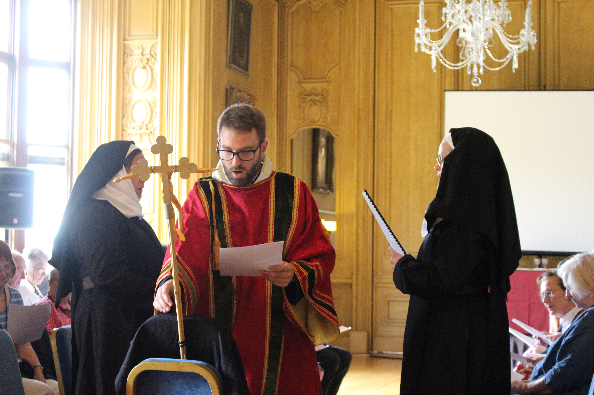
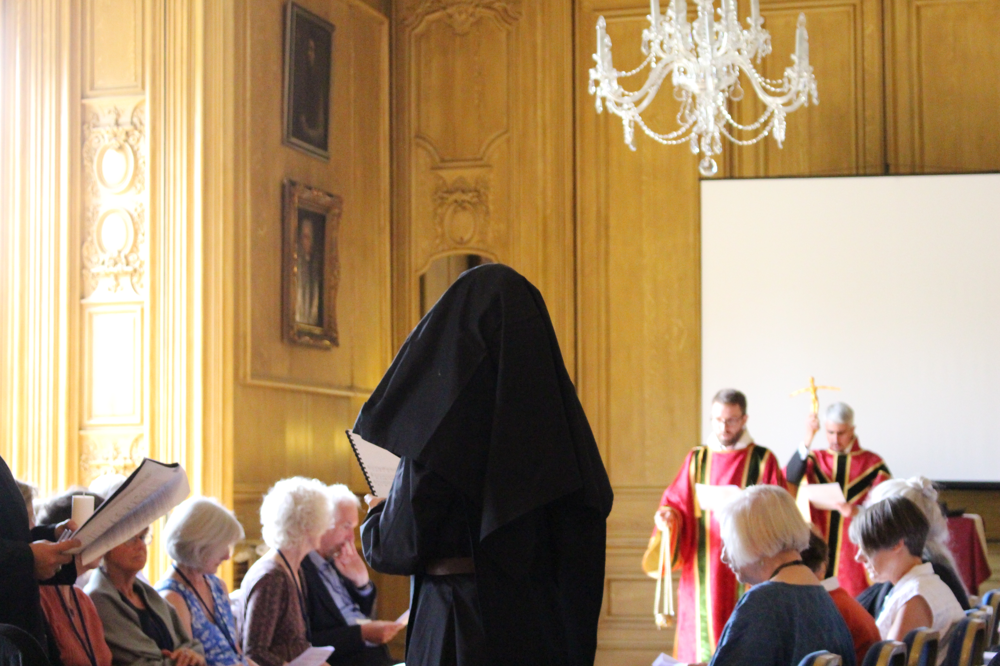

From the 17th to the 20th of July, the Medieval Convent Drama project left the majestic mountains of Switzerland for a beautiful, wonderfully weird English manor (at least to my very Swiss, very rural eyes!). It was such a pleasure for me to return to the Harlaxton Medieval Symposium after having performed there in 2015 in Elisabeth’s production of John of Beverley, and I was lucky enough to benefit from the Dobson scholarship this year. The theme of the symposium was ‘Performance, Ceremony and Display in Late Medieval Britain’. After Elisabeth’s paper, ‘Putting on the Role: the Performance of Medieval Convent Drama’, we gave a workshop together entitled ‘Exploring Performance, Ceremony and Display with the Nuns of Barking Abbey’.
The workshop had been designed with the assistance of Matthew who provided us with musical notation for the chants of the Barking Abbey’s Depositio and who recruited four brilliant singers/actors to bring them to life. The aim of the workshop was to consider contemporary performance of medieval plays as a tool to increase our understanding of their medieval performances. Because of the nature of our research, we were particularly focused on conventual performance and decided to choose the Depositio (a ceremony performed on Good Friday) as a case study for the workshop. We had never performed this ceremony before but had experimented with Barking Abbey’s performance practices in our April production of the nunnery’s Elevatio and Visitatio Sepulchri. We felt it would be valuable to continue exploring such practices with the additional help, this time, of a room full of distinguished medieval scholars. We were especially interested in establishing a discussion around the many decisions, often unforeseen, which need to be made when one wants to perform a play. It is easy to overlook some of these when simply studying a text, but staging it forces directors and actors to confront unclear parts of the play, or those open to interpretation. It is an illuminating process for the researcher who is suddenly bound to deepen her reflection on certain areas she had not considered in details before (such as, for instance, liturgical vestments). We also hoped the workshop would show how the effect of a play can dramatically differ in performance and can suggest some of its impact on a medieval audience, or at least raise new interrogations for the scholar. The music, for example, lengthens the play and transforms it into something quite different, bringing with it additional sounds and emotions. Performance does not generate direct answers but it draws our attention to new questions, new possibilities, and new interpretations.

After changing the spatial arrangement of the room to make it look as much as possible like a church with an altar and choir stalls, we started the workshop with a theoretical introduction, detailing the situation of the abbey, the numbers and the identity of the medieval audience and actors, the content and date of the plays, and presenting the project’s previous productions. The participants were then given two versions of the Depositio. The first, a ‘script’ version, similar to the one we had given our actors /singers, had been edited and featured a translation of the rubrics, a translation of the chants in the footnotes, musical notation, and additional speech markers. The second was a simple transcription of the Latin manuscript. We asked the participants to gather into groups and discuss the staging of the play using their handout, as well as the plan of the abbey church which was projected in front of them: how would they do it, how do they think it was done? We tried to help them by giving them questions to lead their reflection: Who sings what? Who does what? How do the various groups move through the space of the church? Where are the cross and the sepulchre? What costumes do the participants wear? What happens to the props?


In the third part of the workshop, groups were invited to share their thoughts on the staging of the Depositio. We tried to do this question by question but the discussion proved difficult to focus, as each group had something to say about a different topic. It was, however, incredibly useful to have so many and such various opinions expressed on the Depositio and we are very grateful to everyone who contributed. The following points were raised (there were more, particularly concerning drama and liturgy. However, I have not included them in this blog post since they would require much more space and I am still trying to figure out how to really comprehend and articulate them. They will definitely require another post!):
1) The singers. It seemed odd to musicologists for the priests to start the chants Super omnia ligna and Ecce quomodo moritur iustus, to be followed by the cantrix, and then by the choir. According to them, the normal practice would be for someone to start the chant and to be joined by a second person or group of people, rather than to have three groups as is the case here. They advised looking through the Barking Ordinal (in which the plays are recorded) to check whether this occurs during other ceremonies throughout the year or whether it is an isolated practice. Some suggested the priest would start the chants and be followed by the cantrix who would sing the second part. She would only begin it briefly and give the choir the note before being joined by the rest of the nuns. The second option suggested was that the priest sing the first part of the chant, which would then be entirely repeated by the cantrix. The choir would sing the second part.
2) The procession: The procession seemed very short, which participants felt rather defeated the point of having one in the first place. Some argued the procession might go outside and wondered if this was a practice at Barking Abbey; others questioned the position of the sepulchre and suggested it might be located much further away from the high altar than we had anticipated. Finally, some discussed the three antiphons sung during the procession (In pace in idipsum, Habitabit, Caro mea). They are quite brief and might therefore imply that the procession they accompanied was also short. Alternatively, they might be followed each by a psalm, as they are during the Holy Saturday liturgy, even though psalms are not here indicated in the Ordinal.
3) The sepulchre: Other questions and reflections related to the detachable Christ figure and to the sepulchre. A participant suggested Barking’s temporary sepulchre might be covered with patrons’ coats of arms and colours, and could be used as a display of patronage. Elisabeth’s research has shown her that some curtains, cloths, and carpets used to build Easter sepulchres were donated and recorded in wills. Connections between patronage, commemoration, and these dramatic ceremonies might thus be worth exploring. He also mentioned the possible significance of ‘burying’ the detachable Christ figure in the sepulchre on Good Friday (as seems to be the case in the Depositio) and of taking out a monstrance on Easter Sunday (as seems to be the case in the Elevatio). This ‘magic trick’, this transformation from a concrete representation of the body of Christ into the consecrated host could be read as a pedagogical demonstration of the nature of the host. It is not just a round, white piece of bread but the actual body of Christ. The process clearly shows the connection between the two, even if they look quite different.
Workshopping the staging of Barking’s Depositio has encouraged me to look further into medieval liturgy. I will certainly dig into the Barking Ordinal, but also consider more generally Holy Week celebrations in the middle ages, as well as processions and their practical aspects: light, smells, amount of people present.

The last part of the workshop consisted of a performance of the Depositio. We would like to thank the singers who brought this ceremony to life for us. Assisted by the first row of participants—who represented the rest of the sisters sitting in the choir stalls and who processed with them to the tomb—they beautifully and solemnly performed the deposition of Christ into the sepulchre. This mise-en-scène was meant to give the participants an idea of what a present-day performance of this ceremony might look like. The aim was not to present them with a finite idea of how we should stage the Depositio, but with a ‘first draft’, a tentative version, in the hope of exposing the ability of modern performance to create discussion and to deepen research by forcing its audience, its directors, and its performers to engage with some often-overlooked aspects of dramatic practices.
Aurélie